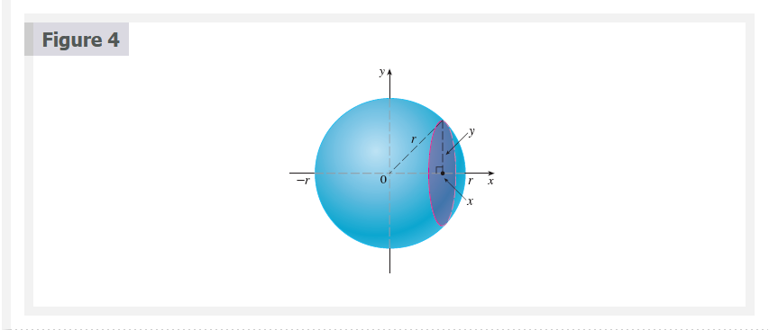
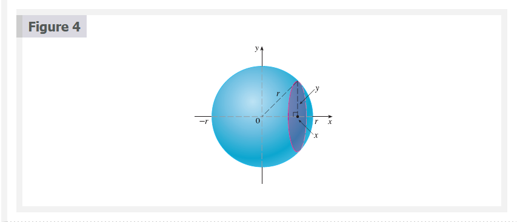
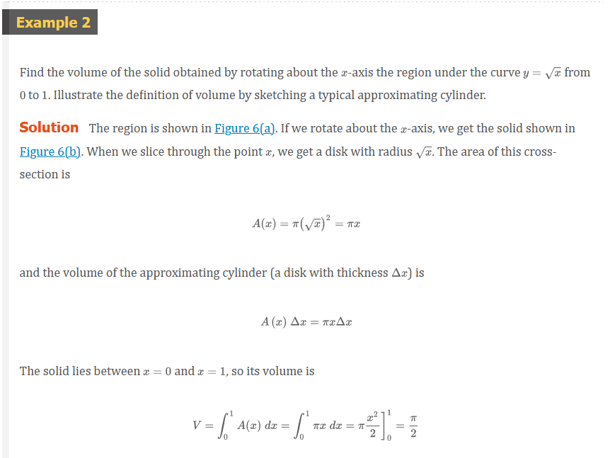
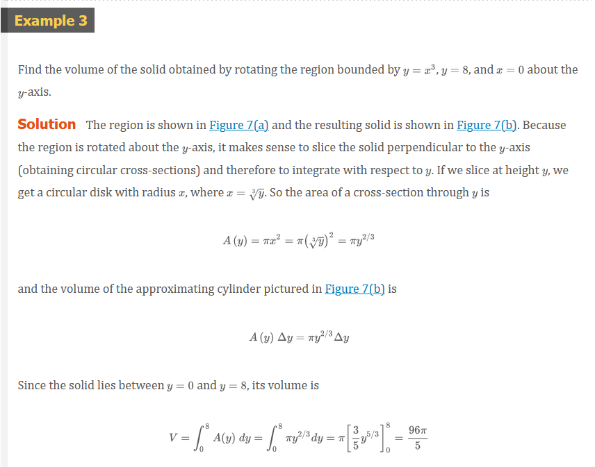
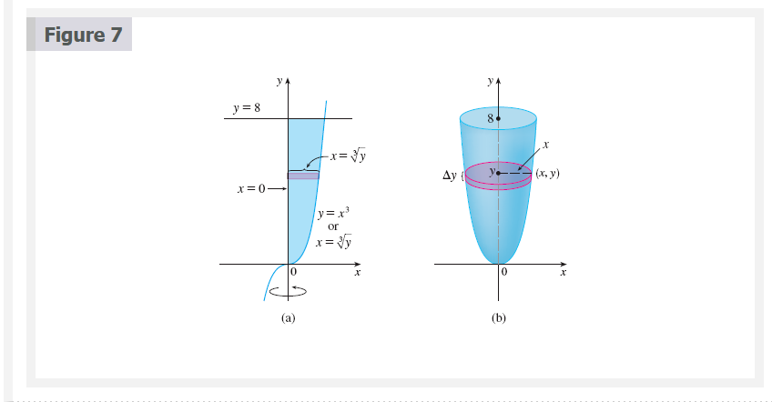
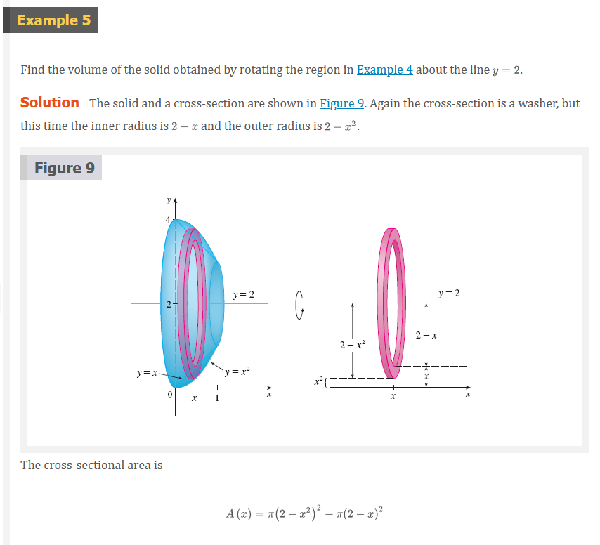
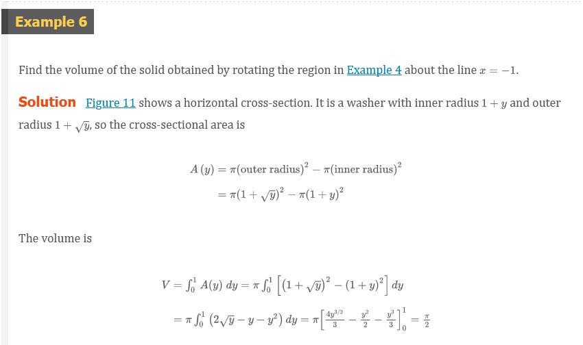

Chapter 6.2: Volumes
Volumes
In trying to find the volume of a solid we face the same type of problem as in finding areas. We have an intuitive idea of what volume means, but we must make this idea precise by using calculus to give an exact definition of volume.
We start with a simple type of solid called a cylinder (or, more precisely, a right cylinder). As illustrated in Figure 1a, a cylinder is bounded by a plane region \(B_{1}\), called the base, and a congruent region \(B_{2}\) in a parallel plane. The cylinder consists of all points on line segments that are perpendicular to the base and join \(B_{1}\) to \(B_{2}\). If the area of the base is \(A\) and the height of the cylinder (the distance from \(B_{1}\) to \(B_{2}\)) is \(h\), then the volume \(V\) of the cylinder is defined as
\[ V = Ah \]
In particular, if the base is a circle with radius, then the cylinder is a circular cylinder with volume \(V = \pi r^{2}h\) [see Figure 1(b)], and if the base is a rectangle with length \(l\) and width \(w\), then the cylinder is a rectangular box (also called a rectangular parallelepiped) with volume \(V = lwh\) [see Figure 1(c)].

For a solid \(S\) that isn’t a cylinder we first “cut” \(S\) into pieces and approximate each piece by a cylinder. We estimate the volume \(S\) of by adding the volumes of the cylinders. We arrive at the exact volume of \(S\) through a limiting process in which the number of pieces becomes large.
We start by intersecting \(S\) with a plane and obtaining a plane region that is called a cross-section of \(S\). Let \(A(x)\) be the area of the cross-section of \(S\) in a plane \(P_{x}\) perpendicular to the \(x\)-axis and passing through the point \(x\), where \(a \le x \le b\). (See Figure 2. Think of slicing \(S\) with a knife through \(x\) and computing the area of this slice.) The cross-sectional area \(A(x)\) will vary as \(x\) increases from \(a\) to \(b\).

Let’s divide \(S\) into \(n\) “slabs” of equal width \(\Delta{x}\) by using the planes \(P_{x_{1}}, P_{x_{2}}, \cdots\) to slice the solid. (Think of slicing a loaf of bread.) If we choose sample points \(x_{i}^{*}\) in \([x_{i - 1}, x_{i}\), we can approximate the \(i\)th slab \(S_{i}\) (the part of \(S\) that lies between the planes \(P_{x - 1}\) and \(P_{xi}\)) by a cylinder with base area \(A(x_{i}^{*}\) and “height” \(\Delta{x}\). (See Figure 3.)
The volume of this cylinder is \(A(x_{i}^{*})\Delta{x}\), so an approximation to our intuitive conception of the volume of the \(i\)th slab \(S\) is
\[ V(S_{i}) \approx A(x_{i}^{*})\;\Delta{x} \]
Adding the volumes of these slabs, we get an approximation to the total volume (that is, what we think of intuitively as the volume):
\[ V \approx \sum_{i = 1}^{n} A(x_{i}^{*})\;\Delta{x} \]
This approximation appears to become better and better as \(n \to \infty\). (Think of the slices as becoming thinner and thinner.) Therefore we define the volume as the limit of these sums as \(n \to \infty\). But we recognize the limit of Riemann sums as a definite integral and so we have the following definition.
Definition of Volume
When we use the volume formula \(V = \int_{a}^{b} A(x)\;dx\), it is important to remember that \(A(x)\) is the area of a moving cross-section obtained by slicing through \(x\) perpendicular to the \(x\)-axis.
Notice that, for a cylinder, the cross-sectional area is constant: \(A(x) = A\) for all \(x\). So our definition of volume gives \(V = \int_{a}^{b} A\;dx = A(b - a)\); this agrees with the formula \(V = Ah\).
 

Figure 5 illustrates the definition of volume when the solid is a sphere with radius \(r = 1\). From the result of Example 1, we know that the volume of the sphere is \(\frac{4}{3}\pi\) , which is approximately \(4.18879\). Here the slabs are circular cylinders, or disks, and the three parts of Figure 5 show the geometric interpretations of the Riemann sums
\[ \sum_{i = 1}^{n} A(\overline{x}_{i})\;\Delta{x} = \sum_{i = 1}^{n} \pi(1^{2} - \overline{x}_{i}^{2})\;\Delta{x} \]
when \(n = 5\), \(10\), and \(20\) if we choose the sample points \(x_{i}^{*}\) to be the midpoints \(\overline{x}_{i}\). Notice that as we increase the number of approximating cylinders, the corresponding Riemann sums become closer to the true volume.
 
 


 
The solids in Examples 1, 2, 3, 4, and 5 are all called solids of revolution because they are obtained by revolving a region about a line. In general, we calculate the volume of a solid of revolution by using the basic defining formula
\[ V = \int_{a}^{b} A(x)\;dx \]
or
\[ V = \int_{c}^{d} A(y)\;dy \]
and we find the cross-sectional area \(A(x)\) or \(A(y)\) in one of the following ways:
If the cross-section is a disk (as in Examples 1, 2, and 3), we find the radius of the disk (in terms of \(x\) or \(y\)) and use
\[ A =\pi(radius)^{2} \]
If the cross-section is a washer (as in Examples 4 and 5), we find the inner radius \(r_{in}\) and outer radius \(r_{out}\) from a sketch (as in Figures 8, 9, and 10) and compute the area of the washer by subtracting the area of the inner disk from the area of the outer disk:
\[ A = \pi(\text{outer radious})^{2} - \pi(\text{inner radius})^{2} \]
The next example gives a further illustration of the procedure.

 


Note We didn’t need to place the vertex of the pyramid at the origin in Example 8. We did so merely to make the equations simple. If, instead, we had placed the center of the base at the origin and the vertex on the positive \(y\)-axis, as in Figure 16, you can verify that we would have obtained the integral
\[ V = \int_{0}^{h} \frac{L^{2}}{h^{2}}(h - y)^{2}\;dy = \frac{L^{2}h}{3} \]


Resources
Textbook